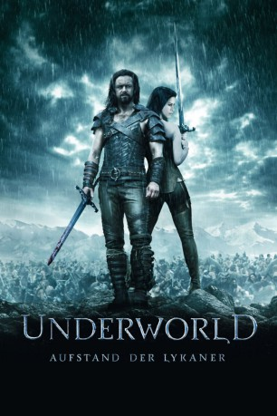
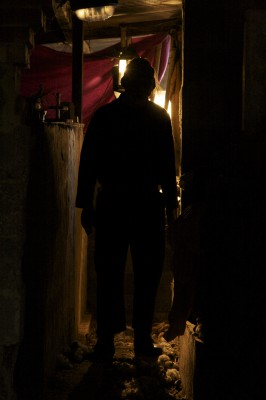
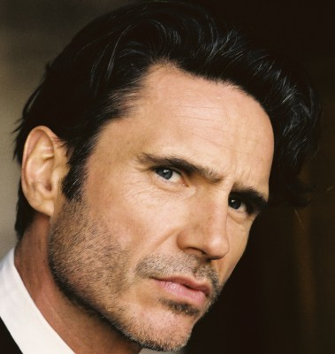
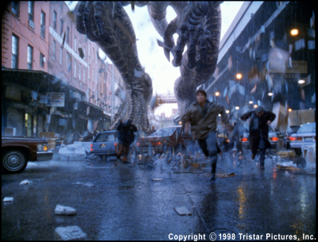

#339 Underworld 3 - Aufstand der Lykaner
Alternativ: Underworld: Rise of the Lycans
 
 IMDB-Wertung: 6.6 / 10
IMDB-Wertung: 6.6 / 10  Metascore: 44
Metascore: 44 
Der Film ist ein Prequel des ersten Films und erzählt die Geschichte des Ursprungs der Lykaner. Lucian, der erste Lykaner, wird von Viktor, einer der drei Ältesten unter den Vampiren, großgezogen. Er schafft so die Lykaner, die sich die aristokratischen Vampire, genannt Death Dealer, als Sklaven halten. Viktors Tochter Sonja, eine rebellische junge Vampirin, hat eine heimliche Beziehung mit Lucian. Lucian will die grausame Unterdrückung seiner Rasse beenden und startet eine Revolution gegen Vampirkönig Viktor. Der Film zeigt die Geschichte bis zum Beginn des ersten Teils.
Jahr: 2009
Dauer: 92 Minuten
FSK: 16
Land: USA Studio: Screen GemsTonspuren: DD5.1 - ,
Untertitel:
Auflösung: 720p (1280×528) Größe: 2775 MB
Genre: Action, Abenteuer, Fantasy, Sci-Fi, Thriller
Regisseur: Patrick Tatopoulos
Drehbuch: Danny McBride, Dirk Blackman, Howard McCain, Len Wiseman, Robert Orr
Soundtrack: Paul Haslinger
Darsteller:
 Michael Sheen als Lucian
Michael Sheen als Lucian Bill Nighy als Viktor
Bill Nighy als Viktor Rhona Mitra als Sonja
Rhona Mitra als Sonja- Steven Mackintosh als Tannis
 Kevin Grevioux als Raze
Kevin Grevioux als Raze- David Aston als Coloman
- Leighton Cardno als Fearful Lycan
 Elizabeth Hawthorne als Orsova
Elizabeth Hawthorne als Orsova Mark Mitchinson als Nobleman
Mark Mitchinson als Nobleman- Tania Nolan als Luka
- Craig Parker als Sabas
- Larry Rew als Kosta
- Jared Turner als Xristo
-  Edwin Wright als Death Dealer Captain
 Kate Beckinsale als Selene
Kate Beckinsale als Selene-  Shane Brolly als Kraven
- Richard Knowles als Creature Performer
- Dale Pavinski als Lycan soldier , uncredited
- Samuel Wheeler als Death Dealer Vampire , uncredited
- Geraldine Brophy als Nobleman's Wife
- Alex Carroll als Young Lucian
- Jason Hood als Death Dealer
- Timothy Raby als Janosh
- Peter Tait als Gyorg
- Olivia Taylforth als Young Sonja
- Eleanor Williams als Teenage Girl
 Brian Steele als Big Lycan / Creature Performer
Brian Steele als Big Lycan / Creature Performer-  Kurt Carley als Creature Performer
Datei: X:\5-Pentalogie(A-Z)\Underworld\Underworld 3 - Aufstand der Lykaner (2009, FSK16, 1280x528).mkv seit 16.02.2015
Festplatte: HD Collection-3(N-Z)-6(A-Z)
 Es gibt insgesamt 9 Filme in der Gruppe '5-Pentalogie(A-Z)\Underworld'
Es gibt insgesamt 9 Filme in der Gruppe '5-Pentalogie(A-Z)\Underworld'